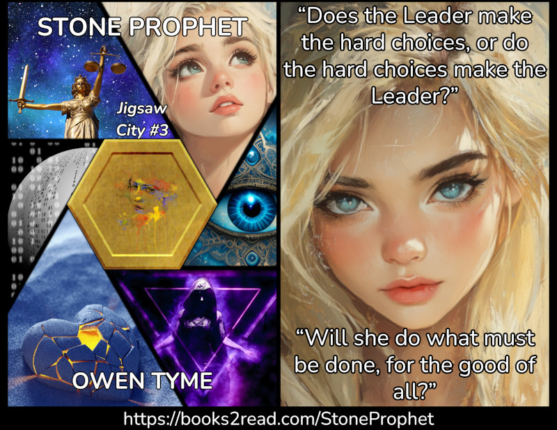

Tymely News
The Modern Witch Hunt
If you'll bear with me as I share a bit of a story, I'd like to use it to make a point about the current social landscape surrounding the use of generative AI.
The Witch
When I wrote Starwitch, the first volume of The Book of Newts, I treated witches as a distinct ethnic group, set apart by their talent for magic.
In that novel, the mother of the main characters, Erika Blackwell, had once been witnessed casting a little sparkly spell that did no harm, for which the man that eventually became mayor of the village continually persecuted her, seeking to burn her at the stake for witchcraft.
In chapter four, Erika was caught in an awful dilemma: her daughters had been witnessed using what was assumed to be witchcraft (technically, it wasn't, but it was magic) to make a horseless carriage function.
That's when the mayor made a real cursed bargain with Erika: she could confess as a witch and her daughters would be pardoned, or the mayor would burn her daughters, who were now publicly known as witches.
Erika chose to lay down her life to save her children, even though she could easily have overpowered the Mayor's mob with magic.
She chose not to fight, because she'd been raised as a pacifist, just the same as she'd raised her daughters.
In that final scene, she had all the magic she needed to save herself and her family, but she put her principles first, at the cost of her life.
She spent her life in service to her community, practicing her trade as a doctor. She sometimes quietly healed the villagers with magic and sold weak herbal healing potions that had been enchanted to fail on those that hated witches, to avoid drawing attention.
She harmed no one and the little incident that originally caught the attention of the young man that eventually became mayor was just a spell to attract fireflies, to dance with her.
Yet, to her dying day, she was unfairly persecuted for her nature as a witch.
The Witch Hunter
Erika was the victim, but to fully understand the situation, you must also know her accuser.
Mayor Godfrey Reumblecleaver began as a young man, during a harvest festival, drinking for the first time in his life, and by all accounts, he drank moonshine like it was water.
He stumbled out of the village, presumably to relieve himself, and stumbled across a young girl, who waved her arms in the air and danced, as sparkles flew around her.
Thus, he leveled the first of many accusations of witchcraft at Erika, only to be embarrassed by a lack of proof. Yet, he remembered and never let it go, angry he hadn't gotten his way.
Over the years, he brought many witnesses forward, each claiming to have seen Erika demonstrating her witchcraft, but at every turn, Erkia ran mental circles around Rumblecleaver, because she'd always been far more intelligent than her rival, the real reason he hated her so much.
Most every witness turned out to be either a bad liar or drunk enough to hallucinate, as was the case with one of the last.
Rumblecleaver absolutely hated Erika for making him look stupid in front of the entire village, many times, despite the fact that was his own doing; Erika simply made the facts clear to all, to defend herself.
Eventually, the village blacksmith and his son witnessed Erika's daughters driving a horseless carriage and the blacksmith was bright enough to reason the steam engine should have been producing both steam and smoke, which it wasn't. His conscience compelled him to tell the mayor, because that was the law.
With obscene delight, Mayor Rumblecleaver used the situation to trap his old rival into giving herself up and he burned Erika at the stake.
After her death, he used the law to seize her lands, to sell them at auction, to pay for the firewood. He left the duty of running the auction to his deputy and bid until he owned the land, because he'd wanted it for many years.
There can be no doubt that Mayor Rumblecleaver was a very evil man, because his actions make it self-evident: he was consumed by hatred for a woman that deserved no punishment, even though the unjust law he administered allowed her to be burned.
Salem Witch Trials
I've recently been reading and watching videos about the Salem Witch Trials for a novel I'm writing and the same kind of thing happened in real life, not just fiction.
Some girls got sick, then pointed the finger at women they labeled as witches, and innocent people were hanged for the "crime" of witchcraft. Everything was done with only circumstantial evidence, because there were no witches among the puritans of Salem.
Those that died were simply the ones that refused to confess to a crime they knew they hadn't committed.
I'd like to further point out that the victims were all poor, ethnic minorities, or simply unpopular, because when the accusations were pointed at someone rich and powerful, the whole farce was finally ended.
Where Witch Hunts Lead
The real crime involved in witch hunting is exactly the same as that committed by the Nazis: prejudice of any kind is wrong. Period.
Hatred of any kind leads to prejudice, sooner or later, and the victims of prejudice rarely have any recourse.
The thing is, when one goes looking for the object of their hatred, lo and behold, it's everywhere, because hatred colors everything they see, until they're burning innocent people alive, sometimes literally.
It always starts the same way, with the same slippery slope: hatred and prejudice.
What Happened to Me
About two weeks ago, as of the time of posting this blog entry, I posted in a social media group for science fiction and fantasy books, to promote my most recently-published novel, Stone Prophet. That one is particularly dear to my heart, because it's the one I was writing when my best friend died and the pain of that experience is on nearly every page, whether I wanted it to be or not.
My post was incorrectly marked as having violated a group rule: No AI generated books.
I posted and asked why my book was flagged that way, because I don't use AI to write. Never have, never will. I started writing novels as a teen between the age of 16 and 18, somewhere between 1996 and 1998. Generative AI wasn't available then and I spent too many years practicing before I ever published a thing, long before AI was even available, so why would I use it to do what I can do better on my own?
In my post questioning the matter, I even included links to all of the art sources I used to make both the cover and the promotional image from the post, which I'll share now, for the sake of completeness:
- https://pixabay.com/illustrations/stars-constellation-universe-twin-7249785/
- https://pixabay.com/photos/justice-statue-lady-justice-2060093/
- https://pixabay.com/illustrations/ball-binary-computer-data-63527/
- https://pixabay.com/illustrations/girl-woman-face-portrait-eyes-2013447/
- https://pixabay.com/illustrations/magic-fantasy-magician-purple-6952448/
- https://pixabay.com/illustrations/eye-mandala-3rd-god-art-mystic-7728794/
- https://pixabay.com/illustrations/heart-sand-art-design-shape-7004820/
- https://pixabay.com/illustrations/aphrodite-goddess-greek-mythology-9476326/
- https://pixabay.com/illustrations/aphrodite-goddess-greek-mythology-9476286/
- https://pixabay.com/illustrations/stars-constellation-universe-twin-7249785/
- The hexagonal coin from the cover is my own creation, made in Inkscape, using this texture pack to give it a little something extra:
As far as I know, none of those images are AI generated. Pixabay has a flagging system for that, which I use to avoid using AI in my art.
Here's the final image, for the curious: 
Taking a moment to examine and compare to the source images will reveal the whole thing is cut and paste (aside from the hexagonal coin; I can do geometric stuff decently, in Inkscape), because that's the kind of art I'm best at. Everything was put together with GIMP, which is an open source alternative to Photoshop.
I politely asked what their proof is that my novel is AI, because it straight-up isn't. I know it for a fact, though I can't prove it, just like the admins of that group cannot prove that I did use AI.
I didn't get a direct answer, but the next morning, the admin that owns the group posted publicly, saying that if he thinks a post is AI, he'll take it down, based entirely on his own opinion, which more or less seems to have been his response to my question.
I politely challenged him on the part involving his opinion, pointing out how easy it is to make a mistake. His response was arrogant enough to make me leave the group, because it made his pointless and blinding hatred of AI obvious to all, because he was hunting witches.
Honestly, I probably wouldn't have cared if the accusatory finger had been pointed at me over one of my other novels, but Stone Prophet is too connected to my real-world pain. It cut me all the way to the bone to have someone basically insist the contents aren't my own words, implying that my feelings over the death of my best friend aren't valid or real.
I'll be blunt on this point: I am not required to share my personal pain with strangers on the internet, via my novels, but they are based on it, because I choose to share. However, the real truth is this: I write for me! Yeah, it's nice if I make a buck from selling my novels, but sharing is secondary to my personal journey of self-discovery that's propelled by writing novels.
The end result of that little drama was me leaving that group and taking a week off from social media, over the fatigue of dealing with that kind of foolishness, arrogance, prejudice and unfounded hatred.
The Modern Witch Hunt
The modern equivalent to the witch is now the AI user on social media and the mere accusation of witchcraft, *ahem*, AI-use is enough to bring punishment.
Just like the Salem Witch Trials and my novel, innocents are the ones that are really being punished, because those that use AI to produce low-quality slop will just go somewhere else, while the innocent literally have nowhere to turn for redress, since as far as most everyone are concerned, accusation is proof.
There Actually is a Middle Road
I get it: some people really don't like AI. I don't like certain uses of it, either, like when it really is based on stolen art or books, or it's used to justify firing some, while overworking others. I also don't like the way data centers are getting sweetheart deals for power, while the residential customers pick up the monetary slack (that one upsets me a lot).
I also get it: AI lets people do things they could never do without it, like seeing art come to life, which they can't produce, because their hands may never be able to move in the way required to make the art in their head real.
Let me teach you something about art, which most of the AI haters seem ignorant of: the most basic skill of visual art is composition, which is the placement of objects in a scene, the choice of colors and so on, basically the overall concept for the image. In essence, describing the scene you want to make into a piece of art is an act of making art and an artistic skill!
Therefore, whether you like it or not, the act of crafting a prompt for an AI art generator is in and of itself, an artistic act, which uses the most basic skill of the visual arts: composition. Yes, generating images over and over to select one that matches the user's vision, while continually refining the prompt, is an artistic act!
It may not be a type of art you like or respect, but that doesn't make it any less artistic. Just like an artist stapling a piece of garbage to a wall and calling it art, so is generative AI, when guided by a human. People generally dislike low-effort art in all forms, but that doesn't mean it isn't art!
Similarly, just because art was made with AI doesn't automatically make it low-effort slop. It can take hours, if not days, of prompt refining and generation to find the perfect image, that matches the one in a person's head. Sometimes it never gets there, but it's still the best they can do with what they've got. Effort and dedication like that should be respected.
At the end of the day, I really am a middle-road guy, because I see both sides and both sides have valid points.
Personally, I use a little AI for promotional images from time to time, but not that often, because people get so wound up about the subject and I don't care to be swept up in the furious arguments.
I also use AI text to speech software to make audiobooks, which I currently can't do without it (I can't afford to pay voice actors, since I can barely afford feeding myself), but the distinction I'll always make about my own use of AI is open source. I won't knowingly use the big models that were made by scraping things without permission and I'll always seek open source options, every time, so it can run on my own hardware.
I try to find and use ethically-sourced AI and yes, that does exist! Not all AI is based on stolen property! The AI text to speech software I use isn't, insofar as I know, and the voice samples I've been using more recently come from Librivox, where everything is public domain and can be used without restrictions of any sort.
For the sake of providing some ethical examples, here's some links to the open source AI TTS software I currently use:
I also used to use Kokoro, but in retrospect, I wish I hadn't, because the training data isn't public. That doesn't mean it's unethical, though. It just leaves an asterisk hanging over it, which I've grown uncomfortable with. I've since replaced it with Pocket in my audiobook process, because that one is both faster and largely more flexible, on top of having no ethical concerns. I just need to redo the little experimental audiobook I made with Kokoro.
Please, Temper Hatred and Rage
I will always stand against hatred, because it always leads to witch hunts and those only hurt the innocent, as proven by history, over and over again.
In conclusion, I hope you'll take my words to heart and temper your hatred, on every subject. Try to see the other guy's point of view before you condemn it, but at least check your rage at the door, before you comment.
I think there's a real need for public dialog about the ethics of AI use, development and regulation, but I'm even more certain it must be discussed with cool heads.
Will you please join me as a rational voice of moderation in the screaming electronic void we call the internet?
Tags: artificial-intelligence, prejudice, social-media, witches